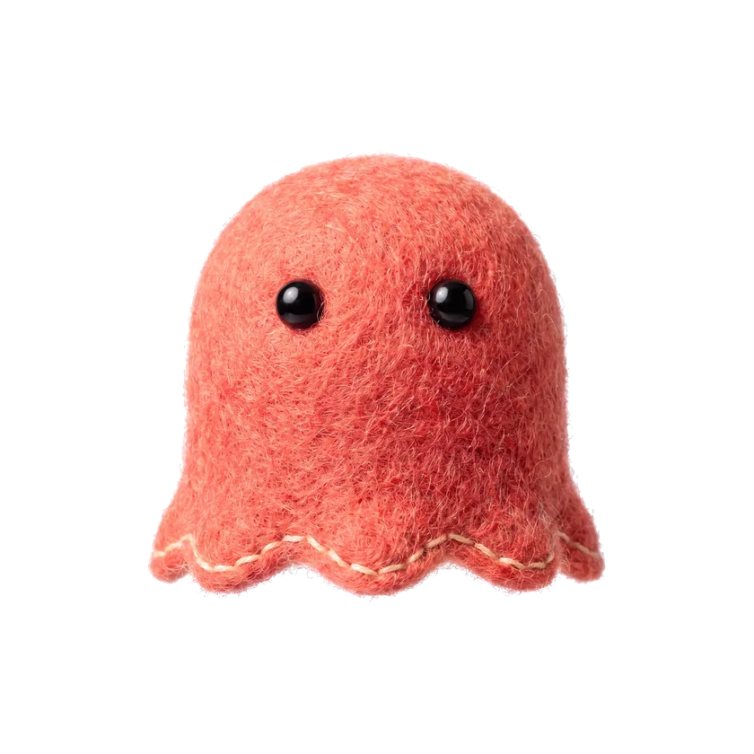

홈페이지 마스코트(코랄 유리 유령 · 유호님 「지금 너무 맘에 드는데」)를 앱 캐릭터로 옮겼다.
원본이 이미 점눈이라 v2에서 인정받은 귀여움 문법과 한 몸이고,
몸이 유리라서 배 속 시냅스 코어가 비쳐 보인다 — 진화 서사가 원본보다 잘 붙는다.
00 · 원본 대조
왼쪽 = 홈페이지 마스코트(Recraft 렌더 원본) · 오른쪽 = 이번 SVG 재현. 같은 점눈·돔 머리·물결 밑단·좌상단 하이라이트.

원본 (홈페이지)Recraft 3D 렌더 · webp
SVG 재현 (앱용)코드 · 파츠·표정·진화가 얹힌다
01 · 기본형 — 유리 속에 코어가 비친다
원본에서 가져온 것
돔 머리 · 물결 밑단 · 점눈 · 좌상단 대형 하이라이트 · 밑단이 짙어지는 유리감 · 둥둥 뜬다(접지 안 함 — 그림자와 틈).
앱에서 더한 것
볼터치(Coral Wash 은은하게) · 표정 4종 · 배 속 시냅스 코어 — 몸이 유리라 「안이 채워진다」는 진화 서사가 원본보다 잘 붙는다.
색
코랄 유리 램프 = Coral Soft #FFCFC6 → Coral 2 #FF8877 → Coral 3 #E8543F + Navy 2 알파(가장자리·밑단). 전부 킷 안이고 신호 #FF6B5C 원색은 안 썼다.
모션
둥둥(3.6s float · 유령이라 숨쉬기 대신 부유) · 코어 펄스 · 6.4s 깜빡임 · reduced-motion 정지.
정직한 리스크 — 이 몸은 코랄이다. 앱의 신호 1점 = 녹음 버튼(코랄 면)인데, 코랄 유리 유령이 같은 화면에 있으면
신호가 흐려진다. 성립 조건은 배치다: 유령이 사는 화면(학생 탭 프로필·꾸미기)에는 녹음 버튼이 없어야 한다.
녹음 화면까지 이 아이를 데려가려면 그때는 v1·v2(크림 몸)가 안전하다 — 이게 v3의 유일한 대가다.
02 · 표정 4종 — 기본은 원본처럼 입이 없다
원본의 무표정(점눈만)이 이 캐릭터의 얼굴이다. 사건이 있을 때만 입이 생긴다 — 그래서 표정이 더 크게 읽힌다.
기본대기 — 입 없음(원본)
기쁨제출 완료·진화
집중녹음 중·과제 중
응원교정 도착·재도전
03 · 진화 7단계 — 유리 속이 채워진다
이름·임계값 라이브 그대로(누적 P 0→2400 · monsterOf 불변) — 시트 이미지 URL 교체만.